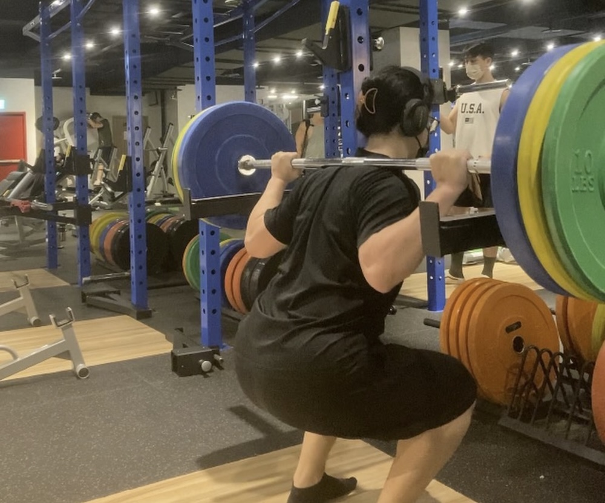
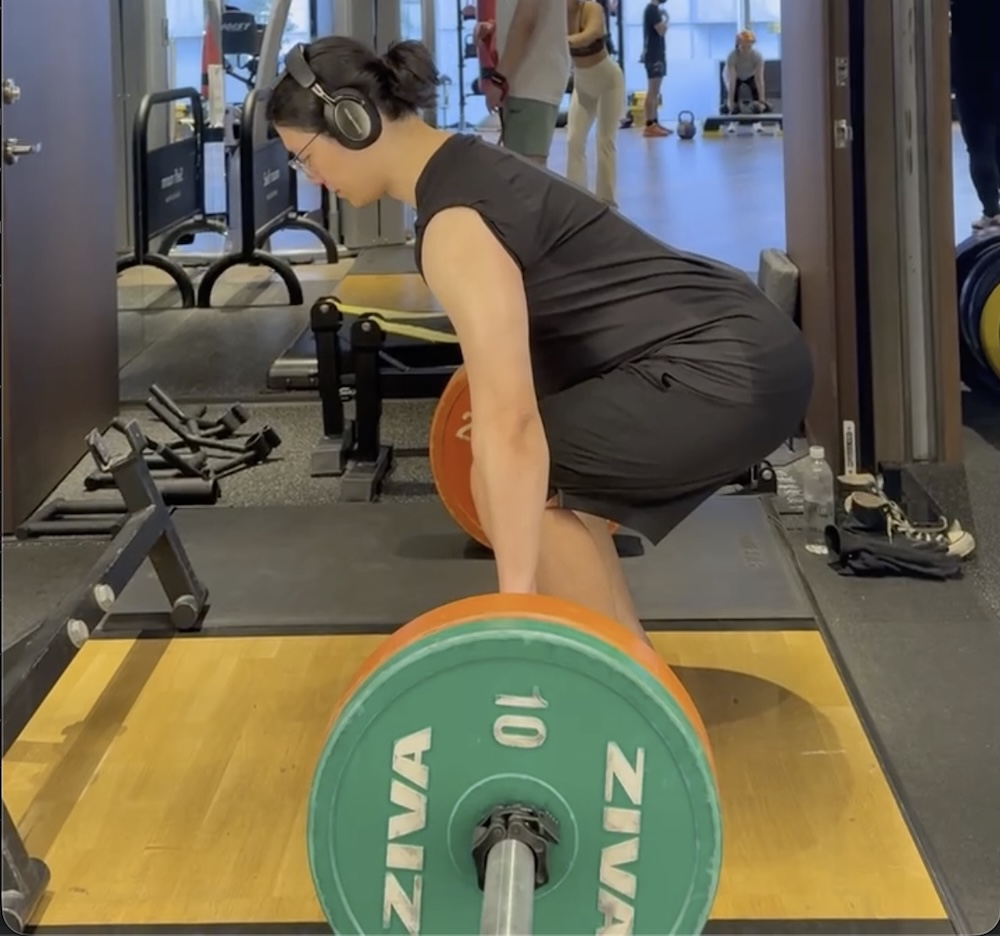
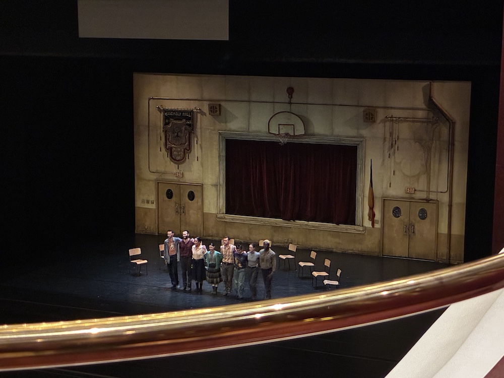
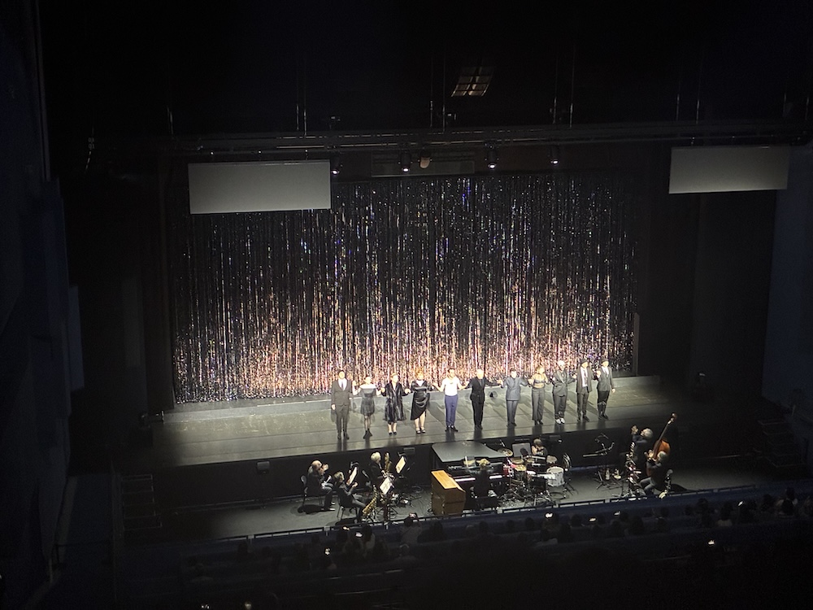
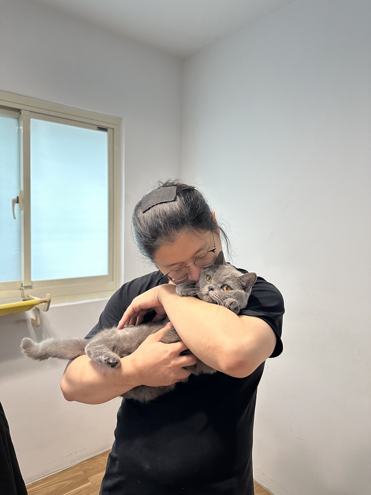

PinYi Lee | Off Work
工作之外，我重訓、看劇場，也和一隻叫碳碳的貓一起生活。
身為後端工程師，我大部分時間都在處理系統、資料與問題。
下班後，我喜歡把注意力放回身體、現場表演，以及日常生活裡的小事。
訓練
持續重訓，是我下班後最穩定的習慣之一。
不是為了某個數字，而是為了讓身體在十年後還願意配合我。


劇場
偶爾走進劇場，看一場表演。
那是一種離開螢幕、重新感受節奏、情緒與現場感的方式。


碳碳
一隻每天提醒我下班時間到了的貓。
牠讓我記得，生活裡有些重要的事，不需要被量化，只需要好好陪伴。
